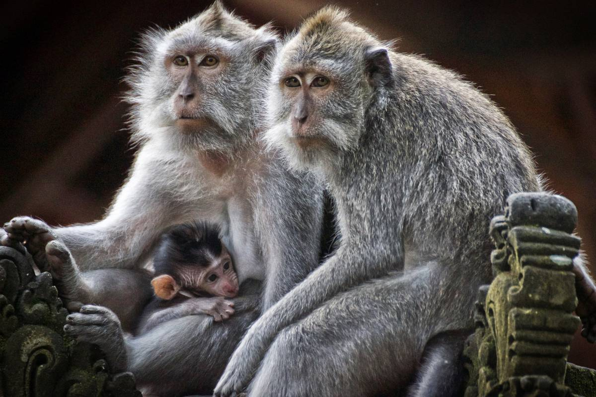

Simiiformes è un infraordine di Primati del sottordine degli Haplorrhini, i cui componenti vengono indicati comunemente come scimmie. I primi rappresentanti di tale infraordine cominciarono a differenziarsi circa 40 milioni di anni fa nei parvordini delle catarrine (scimmie del Vecchio Mondo) e delle platirrine, che andarono a colonizzare le Americhe (scimmie del Nuovo Mondo). 25 milioni di anni fa avvenne la differenziazione delle scimmie antropomorfe (Hominoidea) in seno alle catarrine.
